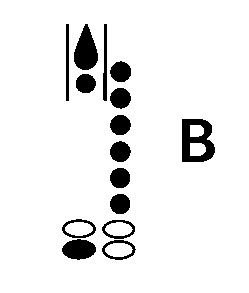

CROSS THE BREAK
Steady air. Quiet fingers. One tiny pinky move.
CLARINET • WRITTEN B / C
SELECT LEVEL
LEVEL 1 · WARM-UP
Play each note slowly. Check the graphic, then rate your attempt.

B — use the right-pinky B key shown
Steady air. Quiet fingers. One tiny pinky move.
